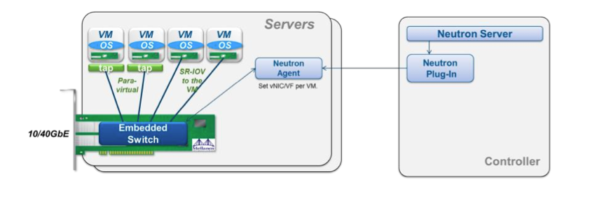

我们在部署openstack时候，如果使用neutron网络组件，不得不为网络性能而头痛，因为纯软件实现的SDN（OVS+VXLAN 或者 OVS+GRE）， 性能损耗是极大的。为了能实现低时延高带宽的高性能网络，需要采用一些硬件辅助的方案，我选取了Mellanox网卡的方案进行了集成和 测试，集成过程中坑还是比较多的，也没有一份比较完整的集成文档，这里记录一下过程（openstack I版本），希望能对他人有些益处。
优化的原理就是能够去掉openvswitch带来的性能损耗，除了使用半虚拟化网卡之外，最好能在neutron框架内使用SR-IOV技术，来看下图:
这里使用neutron的ml2插件，安全组最好用nova的(本文安全组的配置均忽略)。
修改ml2配置文件:
[ml2]
type_drivers = vlan, local
tenant_network_types = vlan, local
mechanism_drivers = openvswitch, mlnx
[ml2_type_vlan]
network_vlan_ranges = default:2:1000 #此处根据自己需求设定
[eswitch]
#vnic_type = mlnx_direct #Pci_passthrough 半虚拟化网卡方式
vnic_type = hostdev # SR-IOV 方式
apply_profile_patch = True
重启neutron-server
开启iommu能够支持VT-d http://pve.proxmox.com/wiki/Pci_passthrough
安装mlnx驱动，开启SR-IOV http://community.mellanox.com/docs/DOC-1317 ，这里注意一下，如果要使用半虚拟化网卡，那么mlx4_core.conf中probe_vf的值需要指定该计算节点你想要配置的半虚拟网卡的数量。
内核装载VFIO模块:
modprobe pci_stub
modprobe vfio
modprobe vfio-pci
初始化VFIO设备 http://www.linux-kvm.org/wiki/images/b/b4/2012-forum-VFIO.pdf
安装eswitch 和 相关VIF driver:
$ mkdir mlnx && cd mlnx
$ wget 'http://www.mellanox.com/downloads/solutions/openstack/icehouse/debian/python-eswitchd_0.10-1_all.deb'
$ wget 'http://www.mellanox.com/downloads/solutions/openstack/icehouse/debian/python-mlnxvif_2014.1.1-1_all.deb'
$ git clone https://github.com/mellanox-openstack/mellanox-eswitchd.git
$ dpkg -i eswitchd_0.8-1_amd64.deb
$ dpka -i python-mlnxvif_2014.1.1-1_all.deb
$ cd mellanox-eswitchd && 拷贝对应的upstart启动文件
$ apt-get install python-ethtool
# eswitchd upstart方式如果启动不了 则修改upstart脚本 以root方式启动
$ restart eswitchd
修改nova-compute配置:
[DEFAULT]
compute_driver=nova.virt.libvirt.driver.LibvirtDriver
[libvirt]
virt_type=kvm
vif_driver=mlnxvif.vif.MlxEthVIFDriver
$ restart nova-compute
计算接点使用neutron-mlnx-agent，配置如下(mlnx_conf.ini):
[eswitch]
physical_interface_mappings = default:eth6 #eth6 为mlnx的网卡
vnic_type = hostdev # SR-IOV
#vnic_type = mlnx_direct # 半虚网卡
[agent]
rpc_support_old_agents = True
[securitygroup]
enable_security_group = False
$ restart neutron-plugin-mlnx-agent
安装mlnx驱动，但是无需开启SR-IOV。
安装neutron-plugin-openvswitch-agent，配置如下:
#修改ml2_conf.ini 增加[ovs]配置块
[ovs]
tenant_network_type = vlan
bridge_mappings = default:br-eth6
# openvswitch配置
$ ovs-vsctl add-br br-eth6
$ ovs-vsctl add-port br-eth6 eth6
# 重启各项服务
network-node其余服务正常安装，正常配置即可。
openstack data-network对应在交换机上的端口需要设置trunk，allow vlan tag 对应的虚拟网络标签。
在物理机上执行:
./mlnxperftuner --allow_changes #输出的log有告诉你可以优化的地方
mlnx_affinity start
#查询 离网卡最近的numa
cat /sys/class/net/eth6/device/numa_node
# numa 绑定
set_irq_affinity_bynode.sh <numa node> eth6
在虚拟机上执行:
mlnx_affinity start
#查询 离网卡最近的numa
cat /sys/class/net/eth0/device/numa_node
# numa 绑定
set_irq_affinity_bynode.sh <numa node> eth0
最后测试的性能指标的确很惊人，物理机直接的ping值大概0.05ms左右。
虚拟机之间SR-IOV方式时延0.1-0.3ms，半虚拟化网卡方式0.3ms左右，带宽能够跑到7~8Gbps(我使用的是10G以太网模式)。
openstack的vm在启动的时候，cloudinit加载时mlnx的网卡驱动还没加载进来，会出现长时间等待获取不到ip的情况，你需要做下面的设置:
echo "mlx4_en" >>/etc/modules
#edit /etc/udev/rules.d/81-mellanox.rules
ACTION!="add", GOTO="drivers_end"
SUBSYSTEM=="net", RUN+="/sbin/modprobe mlx4_en"
LABEL="drivers_end"
如果在I版上使用macvtap网卡，而不是hostdev那种pci passthrough直连方式，需要这样:
#计算节点上调整sr-iov网卡 probe_vf就是半虚拟化网卡的数量
# edit /etc/modprobe.d/mlx4_core.conf
options mlx4_core port_type_array=2,2 num_vfs=16 probe_vf=16 enable_64b_cqe_eqe=0 log_num_mgm_entry_size=-1
#创建一个macvtap port
$ neutron port-create <net-id> --name <port-name> --binding:vnic_type macvtap
#创建vm
$ nova boot <vm-name> --flavor <flavor-name> --availability-zone <az-name> --image <image-name> --nic port-id=<port-id>